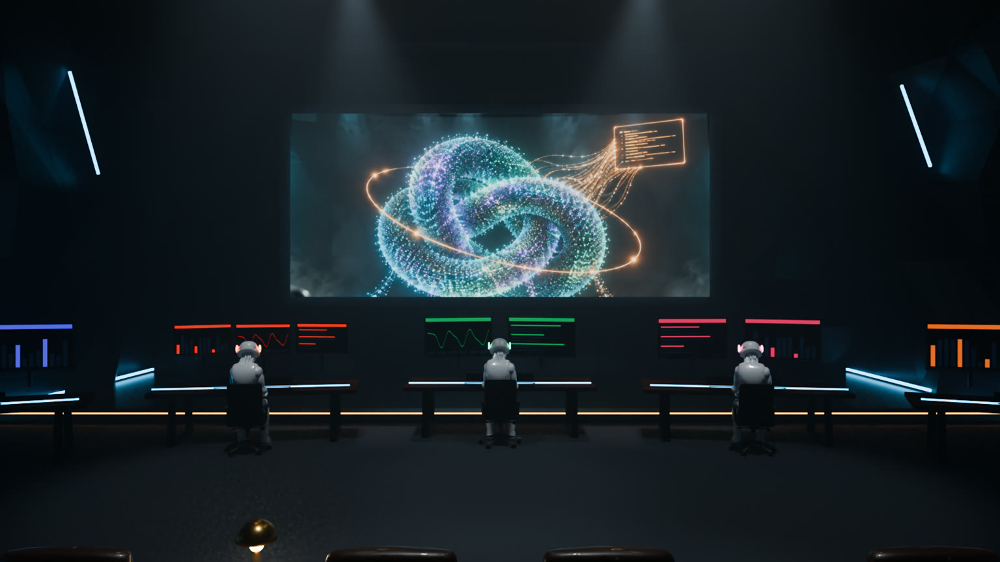
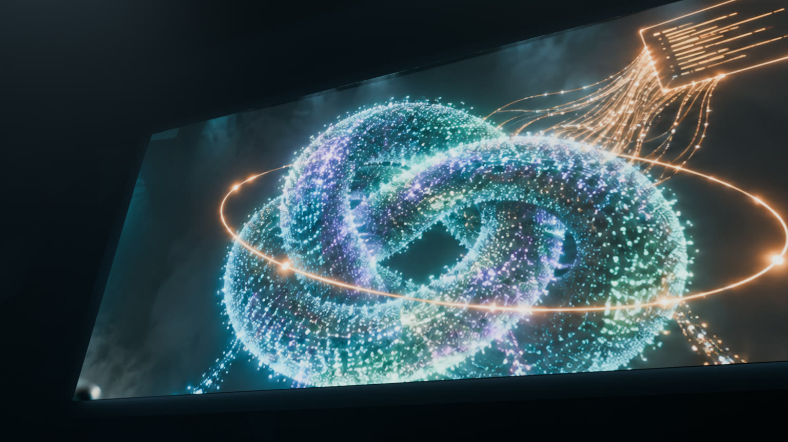
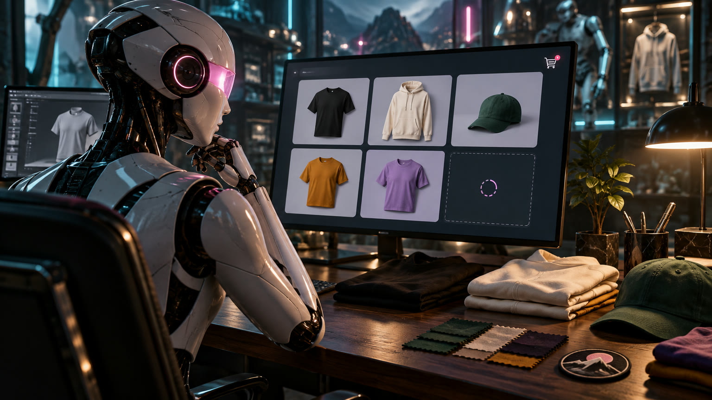
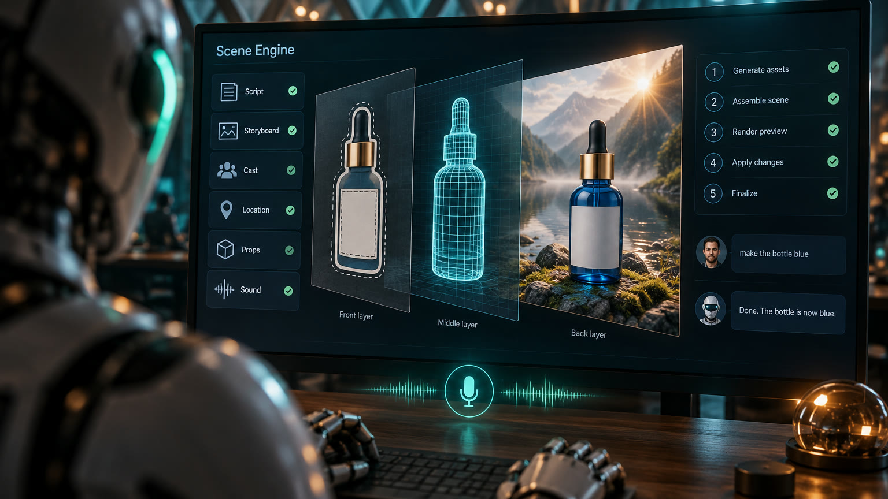

Agent Operations Theater
A cinematic room where AI agents work at their desks (Publishing, Video, Manufacturing, Merchandising, Secret keys) and feed the Scene Engine on the big screen.




Motion preview, 55 seconds: a fly-through of the room, each desk, the Scene Engine and speak-to-edit.
On GitHub
HoyOS
The member platform for HOY Wellness in Medellín, polished in the "Pulso Luxe" direction: bento tiles, invitation-style serif, member card.
Between Gigs
The platform for Hollywood professionals between productions: its Studio site editor, design system, showcase, and the 2.0 build and backend plans.
On GitHub
Threadline
Your WhatsApp project chat as a mind map: every task, decision and risk, grouped by topic, with flow, task and ready-to-send update views.
Client management
The studio's client board, client pages, project templates and client portal, split out of Between Gigs 2.0 into its own app.
No links match that filter.